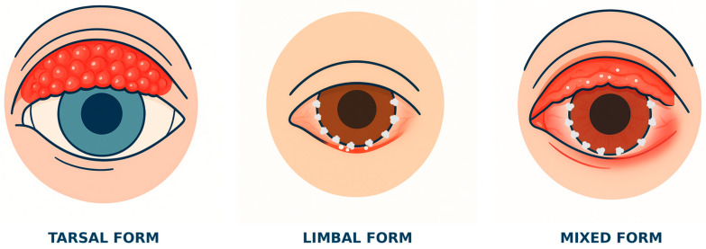
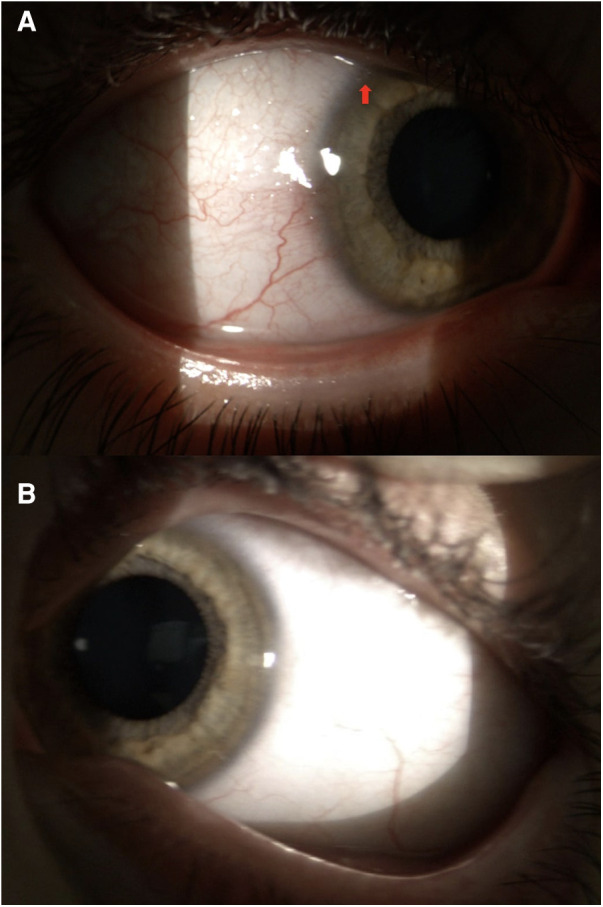
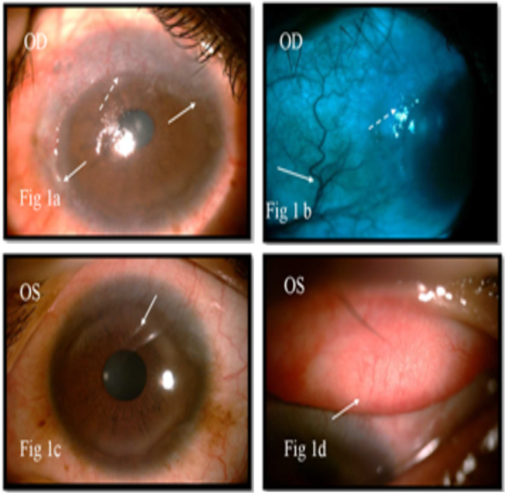
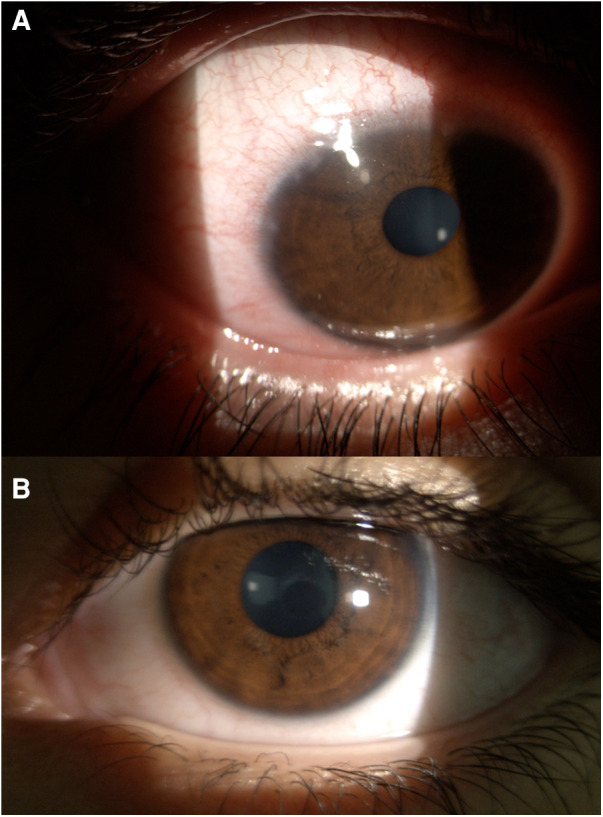
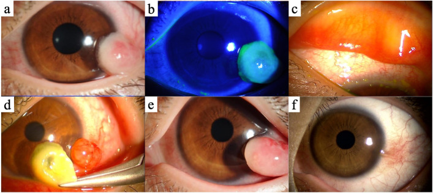
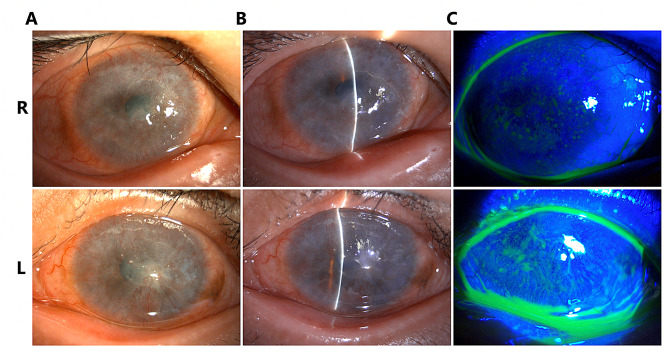
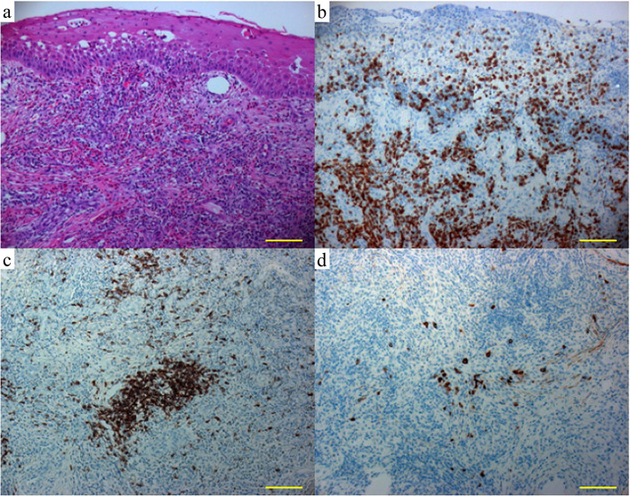

3260 — Viêm kết mạc mùa xuân thể rìa / Limbal vernal keratoconjunctivitis: nốt Horner–Trantas, nhú rìa sền sệt và nguy cơ thiếu hụt tế bào gốc rìa
Tags: pattern:viem-ria pattern:nhu-ria pattern:not-horner-trantas pattern:gia-arcus pattern:tan-mach-giac-mac pattern:mat-mot-ben vung:mat vung:ket-mac vung:giac-mac vung:ria-giac-mac protocol:den-khe protocol:fluorescein protocol:AS-OCT protocol:IVCM protocol:UBM protocol:topography protocol:IOP score:Bonini score:Gokhale incidentaloma:khong
Mức chắc chắn (certainty): tổng hợp y văn (literature synthesis) — dựng từ hai ca thể rìa một bên trong cùng gia đình (PMC10577227), ca khối rìa có mô học đầy đủ (PMC8961886), ca OSSN giả PEH ở VKC mạn (PMC10880557), ca VKC giả thiếu hụt tế bào gốc rìa toàn bộ (PMC13154496), ba loạt bệnh nhân VKC 132/135/468 ca (PMC13529053, PMC9773114, PMC3831763), đoàn hệ 1.096 ca VKC (PMID 39880668), nghiên cứu AS-OCT bề dày biểu mô 71 mắt (PMC10203025), phân tích gộp tacrolimus 832 bệnh nhân (PMC12343550), đoàn hệ cyclosporine A 0,1% ở 101 trẻ (PMC12534624) và cập nhật phân độ VKC 2025 (PMC12507153). Nhóm không có bệnh nhân của mình; chỗ chưa đủ chắc ghi "chưa rõ". Không ghi tên tác giả — attribution = tạp chí + năm + PMCID/DOI.
Câu chốt: trẻ ngứa mắt dữ dội, sợ ánh sáng, chảy nước mắt, khám thấy rìa giác mạc dày lên dạng sền sệt và các nốt trắng nhỏ (nốt Horner–Trantas) — đó là thể rìa của viêm kết mạc mùa xuân (limbal VKC), thể chiếm đa số ở châu Á (59,09% trong 132 ca; 61,5% trong 135 ca), không phải "viêm kết mạc dị ứng thường". Hai điều quyết định tiên lượng: (1) rìa là nơi chứa tế bào gốc — trong 1.096 ca VKC, thiếu hụt tế bào gốc rìa (LSCD) 5,29%, keratoconus 18,43%, glôcôm 10,95%, đục thể thủy tinh do corticoid 11,41%; (2) khối sền sệt ở rìa có thể là tăng sản biểu mô giả ung thư (PEH, lành tính) hoặc u tân sinh bề mặt nhãn cầu (OSSN, ác tính) — phải soi kỹ mạch nuôi, bờ tổn thương và xâm lấn giác mạc, sinh thiết khi nghi, nhưng không mổ ngay mọi khối rìa.
1. Tổng quan bệnh học – cơ chế hình ảnh (TẠI SAO)
1.1 Vì sao rìa lại là "điểm nóng" của VKC
- Giải phẫu: rìa là vùng chuyển tiếp giữa biểu mô giác mạc (biểu mô lát tầng, không sừng hóa, trong suốt) và biểu mô kết mạc (có tế bào đài tiết nhầy). Tại đây có hàng rào Vogt (palisades of Vogt) và tế bào gốc rìa — nguồn tái tạo biểu mô giác mạc suốt đời. Rìa cũng là nơi dày đặc mast cell, tế bào tua và mạch máu nhất của bề mặt nhãn cầu.
- Cơ chế dị ứng: VKC là viêm IgE/Th2 phối hợp cơ chế không IgE: mast cell giải hạt → histamine, tryptase, leukotriene; eosinophil được chiêu mộ bởi eotaxin; Th2 tiết IL-4/IL-5/IL-13; biểu mô giải phóng alarmin (TSLP, IL-33) khuếch đại vòng viêm. Vì rìa phơi nhiễm UV và dị nguyên nhiều nhất, phản ứng viêm tập trung ở đây.
- TẠI SAO "sền sệt" (gelatinous): viêm làm tăng tính thấm mạch → phù mô đệm + ứ nhầy (hyaluronic acid, mucin) + thâm nhiễm tế bào viêm dày đặc. Ánh sáng bị tán xạ không đồng nhất qua vùng phù–tế bào–nhầy đó, nên rìa mất trong suốt, trông như thạch — không phải "mủ".
- TẠI SAO nốt trắng: nốt Horner–Trantas là ổ tụ tập eosinophil đang thoái hóa + mảnh xác tế bào biểu mô (PMC8961886). Protein của hạt eosinophil (MBP, ECP) độc với biểu mô, nên quanh nốt trắng thường có trợt chấm nông cạnh rìa (paralimbal punctate keratitis).
- TẠI SAO khối rìa đôi khi thành "u": viêm mạn + cọ xát lặp lại → tăng sản biểu mô phản ứng (PEH) và mô hạt viêm (eosinophil, lympho, tương bào, nguyên bào sợi). Khối có thể 4 × 4 × 4 mm, màng giả phủ ngoài, và mô học lành tính (PMC8961886). Nhưng cùng hình thái sền sệt + mạch nuôi lại có thể là OSSN — đây là lý do không được chẩn đoán bằng mắt thường.
1.2 Vì sao thể rìa đe dọa thị lực — số liệu định lượng
- Mất tế bào gốc rìa → kết mạc hóa giác mạc: khi tế bào gốc rìa bị tổn thương mạn, biểu mô kết mạc (có tế bào đài) mọc lấn qua rìa lên giác mạc → kết mạc hóa (conjunctivalization), tân mạch, trợt biểu mô tái diễn, sẹo, pannus. Đây là LSCD — biến chứng không hồi phục nếu mất tế bào gốc thật.
- Tần suất trong thực hành: đoàn hệ 1.096 ca VKC (Ấn Độ, 2015–2020) ghi nhận LSCD 5,29%, keratoconus 18,43%, glôcôm 10,95%, đục thể thủy tinh do corticoid 11,41%; 52,04% là thể hỗn hợp (PMID 39880668, DOI 10.1136/bjo-2024-325762). Như vậy cứ ~19 bệnh nhân VKC có 1 người LSCD — không phải biến chứng hiếm.
- Thể rìa chiếm ưu thế ở châu Á: 59,09% (78/132) thể rìa, 24,24% thể hỗn hợp, 16,67% thể sụn mi trong loạt 132 ca; nhú rìa 51,52%, nốt Horner–Trantas 18,18%, giả arcus (pseudogerontoxon) 16,67% (PMC13529053). Loạt 135 ca Bắc Ấn: thể rìa 61,5%, thể sụn mi 28,9%, thể hỗn hợp 10,4% (PMC9773114). Loạt 468 ca Nam Ấn: dày rìa 73%, thể rìa đơn thuần 12,6%, thể hỗn hợp 72% (PMC3831763) — tức phần lớn bệnh nhân có thành phần rìa, kể cả khi nhú sụn mi là dấu chính.
- Vì sao thể rìa không được xem là "nhẹ": tổn thương giác mạc (loét khiên) gặp nhiều hơn ở thể sụn mi (PMC12507153), nhưng thể rìa mang viêm rìa 360° (annular limbitis), pannus, LSCD và khối rìa — những tổn thương âm thầm, khó hồi phục. Trong phân độ Gokhale, viêm rìa vòng + LSCD nằm trong nhóm "blinding VKC" (VKC gây mù).
- Bằng chứng hình ảnh sớm trên AS-OCT: 71 mắt VKC (34 thể sụn mi, 37 thể hỗn hợp; không có thể rìa đơn thuần) so với 71 mắt chứng: bề dày biểu mô nhỏ nhất (MIN) 45,99 ± 6,52 vs 50,11 ± 1,91 µm (p < 0,001), MIN−MAX −11,77 ± 9,38 vs −5,80 ± 1,88 µm (p < 0,001), SUP−INF −1,86 ± 2,87 vs −0,76 ± 1,20 µm (p = 0,008) (PMC10203025). Nghĩa là mỏng biểu mô khu trú, lệch trên xuất hiện trước khi có tổn thương thị lực rõ — dấu hiệu của viêm rìa mạn và cọ xát.
- Giả arcus (pseudogerontoxon): dải mờ ngoại vi giống arcus nhưng cách rìa một khoảng trong, gặp ở 16,67% bệnh nhân VKC (PMC13529053); ở trẻ, đây là dấu của viêm rìa mạn, không phải rối loạn lipid — tránh xét nghiệm lipid không cần thiết.
1.3 Vì sao đèn khe là "modality chính" — và các công cụ bổ trợ
- Đèn khe + fluorescein là tiêu chuẩn chẩn đoán: thấy vị trí, số giờ cung, nhú rìa, nốt Trantas, trợt chấm cạnh rìa, pannus, màng giả, khối rìa. Không cần CT/MRI cho VKC không biến chứng.
- AS-OCT bề dày biểu mô (epithelial thickness map): đo bề dày trung tâm, vùng trên, vùng dưới, MIN, MAX trên vòng 5–9 mm; phát hiện mỏng khu trú và bất đối xứng (MIN−MAX, SUP−INF). Đây là cách định lượng "vùng bệnh" khi đèn khe chỉ thấy "hơi mờ".
- IVCM (soi đồng tiêu in vivo): laser 670 nm, phóng đại ~600×, trường 0,16 mm², phân giải 1 µm ngang / 4 µm dọc (PMC11529254); thấy tế bào tua (dendritic cells), thâm nhiễm tế bào viêm, nhú và xơ hóa mô đệm. Hữu ích khi nghi LSCD, theo dõi điều trị, nhưng chưa thay thế đèn khe trong thực hành thường quy.
- UBM (siêu âm sinh học): với khối rìa, UBM cho biết độ sâu, xâm lấn mô đệm nông, có/không xâm lấn củng mạc; trong ca OSSN giả PEH, UBM thấy khối tăng hồi âm từ 7 đến 2 giờ, không xâm lấn củng mạc (PMC10880557).
- Topography/Pentacam + đo nhãn áp: bắt buộc vì keratoconus 18,43% và glôcôm do corticoid 10,95% trong loạt 1.096 ca (PMID 39880668).
2. Mẫu hình + chẩn đoán phân biệt theo vị trí (gamut)
Mẫu hình chính: rìa dày sền sệt + nốt trắng Horner–Trantas + ngứa theo mùa ở trẻ; có thể một bên (hiếm, 2–3,3%) hoặc hai bên; kèm nhú sụn mi (thể hỗn hợp).

Sơ đồ ba thể VKC: thể sụn mi (nhú khổng lồ ở sụn mi trên), thể rìa (nốt/nhú ở rìa, kết mạc cương tụ) và thể hỗn hợp. Nguồn: Children 2025 (PMC12110089), Fig. 1, CC BY 4.0.

Thể rìa: nhú rìa nhỏ và nốt Horner–Trantas (mũi tên đỏ) ở vùng trên–thái dương, kết mạc cương tụ; mắt trái bình thường. Đây là dấu "chốt vào" của thể rìa — nhưng nốt có thể thoáng qua, bị che bởi màng giả hoặc mờ đi sau corticoid. Nguồn: Front Pediatr 2023 (PMC10577227), Fig. 2, CC BY 4.0.
- Rìa trên (10–2 giờ): thể rìa VKC (hay gặp nhất), viêm kết mạc rìa trên (SLK), PEH, pterygium sớm, sẹo sau mổ/xạ.
- Rìa mũi/thái dương: pterygium/pinguecula, OSSN, u bì rìa (limbal dermoid), viêm củng mạc nốt (nodular episcleritis), PEH.
- Rìa 360° (viêm rìa vòng): VKC mạn nặng ("blinding VKC"), LSCD, bỏng hóa chất, loét Mooren (hiếm), viêm rìa do bệnh hệ thống.
- Khối khu trú: PEH, OSSN, nhú u (papilloma), u bì, Rosai–Dorfman (rất hiếm), u hạt do dị vật.
- Gợi nhớ "LIMP": Limbal VKC · Inflammation (SLK, episcleritis) · Mass (PEH, OSSN, papilloma) · Pterygium/pinguecula.
3. Bảng so sánh phân biệt (ma trận đối chiếu)
| Thực thể (entity) | Hình ảnh điển hình | Chốt vào (rule-in) | Chốt loại (rule-out) | Gợi ý xác nhận |
|---|---|---|---|---|
| VKC thể rìa | Rìa dày sền sệt, nốt Horner–Trantas trắng–vàng, nhú rìa, trợt chấm cạnh rìa; có thể một bên; kèm nhú sụn mi | Ngứa theo mùa + nốt Trantas + rìa sền sệt + tuổi trẻ; đáp ứng corticoid ngắn hạn | Khối đặc có mạch nuôi, không ngứa, một bên cố định → không chỉ VKC; rìa bình thường → loại | Đèn khe + fluorescein; AS-OCT; hỏi atopy/dị ứng; khám mắt đối bên |
| SLK (viêm kết mạc rìa trên) | Sung huyết kết mạc nhãn cầu 1/3 trên, nhú mịn, nhuộm rose bengal/lissamine ở rìa trên; hai bên; hay kèm bệnh tuyến giáp | Đau–cộm trên + nhuộm rìa trên + bệnh tuyến giáp | Có nốt Trantas + ngứa theo mùa + nhú sụn mi → VKC | Đèn khe, nhuộm, chức năng tuyến giáp; không có khối rìa thật |
| Pterygium/pinguecula | Khối tam giác xơ–mạch từ rìa lan lên giác mạc; pinguecula là nốt vàng ở kết mạc nhãn cầu | Hình nêm + hướng lan theo trục ngang + tiền sử nắng/gió/bụi | Sền sệt lan tỏa theo chu vi + nốt Trantas + ngứa → VKC | Đèn khe; AS-OCT xác định độ xâm lấn; không sinh thiết nếu điển hình |
| OSSN | Sền sệt/leukoplakia/nhú, mạch nuôi (feeder vessels), xâm lấn giác mạc, gặp ở người lớn/UV; có thể giả PEH | Mạch nuôi rõ + bờ không đều + xâm lấn giác mạc + tuổi lớn | Trẻ + ngứa theo mùa + Trantas + đáp ứng kháng viêm không loại trừ hoàn toàn — vẫn sinh thiết nếu nghi | Tế bào học ấn (impression cytology), sinh thiết, UBM; không theo dõi mù |
| PEH (tăng sản biểu mô giả ung thư) | Khối/nhú rìa lành tính trong VKC mạn, có thể vài mm đến 4 × 4 × 4 mm, màng giả; mô học acanthosis, mất cực, màng đáy còn nguyên | Tiền sử VKC + khối rìa + mô học lành tính | Xâm lấn màng đáy/tế bào loạn sản → OSSN; mạch nuôi kiểu nan hoa → nghi OSSN | Sinh thiết/cắt bỏ + mô học; không chẩn đoán bằng hình thái |
| Viêm củng mạc nốt/episcleritis | Nốt đỏ khu trú, đau, di động, mạch máu củng mạc giãn; blanch với phenylephrine | Đau + nốt đỏ + blanch + không có Trantas | Sền sệt rìa + nốt trắng + ngứa → VKC/PEH | Đèn khe, phenylephrine; siêu âm củng mạc nếu nghi viêm củng mạc |
| U bì rìa (limbal dermoid) | Khối bẩm sinh, vàng–trắng, có thể lông/keratin, ổn định từ nhỏ | Có từ nhỏ + không thay đổi + không viêm | Khối mới xuất hiện, lớn nhanh, đau/ngứa → không phải u bì | Đèn khe; AS-OCT; hỏi tiền sử từ nhỏ |
| LSCD (hậu quả hoặc bệnh riêng) | Kết mạc hóa giác mạc, tân mạch, pannus, trợt tái diễn, mờ đục; có thể giả LSCD toàn bộ | Kết mạc hóa + tân mạch + tế bào đài trên giác mạc | Chỉ viêm rìa, giác mạc còn trong → chưa LSCD thật; giả LSCD do viêm có thể hồi phục | Test hấp thụ/ấn tế bào, IVCM, AS-OCT; điều trị kháng viêm trước khi kết luận không hồi phục |
4. Protocol khám/chụp + hệ phân độ & bậc điều trị
Bước 1 — hỏi bệnh (quyết định hơn mọi máy): ngứa theo mùa hay quanh năm? sợ ánh sáng? chảy nước mắt? tiền sử atopy (hen, viêm mũi dị ứng, chàm)? thuốc nhỏ trước đó (corticoid, kháng sinh, kính tiếp xúc)? một bên hay hai bên? thời gian và tái phát.
Bước 2 — khám đèn khe theo trình tự cố định:
- Ánh sáng khuếch tán: đỏ rìa, phù kết mạc, vị trí theo giờ.
- Khe sáng hẹp (narrow beam): đo độ dày rìa, phát hiện sền sệt, nốt Trantas, màng giả, nhú rìa.
- Fluorescein: trợt chấm cạnh rìa, loét khiên, bề mặt không đều; ghi số giờ cung và đường kính tổn thương.
- Lộn mi trên: tìm nhú gai > 1 mm (thể hỗn hợp), lông xiêu, dị vật.
- Đo nhãn áp (trước và trong khi dùng corticoid), thị lực, khúc xạ; topography khi nghi keratoconus.
Bước 3 — chẩn đoán hình ảnh (khi cần định lượng/trước can thiệp):
- AS-OCT bề dày biểu mô: vòng 5–9 mm, ghi CET, SUP, INF, MIN, MAX, MIN−MAX, SUP−INF. Ở trẻ VKC, MIN 45,99 vs 50,11 µm và MIN−MAX −11,77 vs −5,80 µm so với chứng (PMC10203025) — dùng để theo dõi mỏng biểu mô và phát hiện bất đối xứng.
- IVCM: khi nghi LSCD, cần đếm tế bào tua/tế bào viêm, theo dõi đáp ứng; thông số: 670 nm, ~600×, 0,16 mm², 1 µm/4 µm (PMC11529254).
- UBM: khối rìa > 2–3 mm, nghi xâm lấn củng mạc hoặc OSSN; đo độ sâu và bờ.
- Topography/Pentacam + đo nhãn áp: bắt buộc ở mọi trẻ VKC vì keratoconus 18,43%, glôcôm 10,95% (PMID 39880668).
Bước 4 — phân độ (chọn 1, ghi rõ trong hồ sơ):
| Hệ phân độ | Nội dung cốt lõi | Dùng để |
|---|---|---|
| Bonini | Grade 0 quiescent; 1 nhẹ từng đợt; 2 trung bình (2A từng đợt/2B dai dẳng); 3 nặng (nhú gai/Horner–Trantas, trợt chấm); 4 rất nặng (trợt lan, loét, Trantas viêm); 5 di chứng xơ hóa | Chọn bậc điều trị, ghi nhận Trantas là dấu nặng |
| Gokhale | Nhẹ → trung bình từng đợt → trung bình mạn → nặng → "blinding VKC" (nhú sụn mi khổng lồ, loét khiên, sẹo, viêm rìa vòng, LSCD) | Nhận diện thể rìa nặng và nguy cơ mù |
| 5-5-5 | 100 điểm cho nhú gai hoạt động, thâm nhiễm rìa sền sệt, trợt biểu mô, loét khiên; 10 điểm cho nốt Horner–Trantas, viêm bờ mi, phù kết mạc; 1 điểm cho nhú sụn mi nhẹ, hyperemia, chảy nước mắt | Thâm nhiễm rìa sền sệt được 100 điểm — một dấu rìa nhỏ có thể đẩy tổng điểm lên cao |
| Universal 2025 | Grade I–IV theo tình trạng giác mạc + tính chu kỳ triệu chứng (không theo mức hoạt động) | Phân tầng nguy cơ dài hạn; xây trên 1.096 ca |
Bước 5 — bậc điều trị (thực hành, có số liệu):
| Bậc | Can thiệp | Số liệu/ngưỡng |
|---|---|---|
| 1 | Tránh dị nguyên, nước mắt nhân tạo không bảo quản, chườm lạnh | Nền tảng; không đủ kiểm soát viêm rìa |
| 2 | Kháng histamine + ổn định mast cell (ketotifen, olopatadine, epinastine) | Giảm ngứa; không đủ khi có nốt Trantas/khối rìa |
| 3 | Corticoid nhẹ–trung bình, nhịp ngắn (loteprednol, fluorometholone; prednisolone khi nặng) | Theo dõi IOP mỗi lần khám: glôcôm do corticoid 8,89% (PMC9773114), glôcôm 10,95% và đục thể thủy tinh do corticoid 11,41% (PMID 39880668) |
| 4 | Tacrolimus 0,1% nhỏ (hoặc mỡ 0,03%) | Phân tích gộp 17 nghiên cứu/832 bệnh nhân: dấu khách quan SMD −0,70 (95% CI −1,28…−0,13); nhỏ 0,1%: SMD −1,09 (−1,59…−0,59); triệu chứng SMD −0,86; mỡ 0,03%: RR biến cố 0,16 (PMC12343550) |
| 4b | Cyclosporine A 0,1% nhũ tương cation (hoặc 1% galenic) | 101 trẻ: 17,8% phải chuyển lên 1% sau 0,91 ± 0,82 năm; tổng điểm ≥ 15 hoặc điểm dấu ≥ 7 → nguy cơ đáp ứng kém > 4 lần (PMC12534624) |
| 5 | Corticoid tiêm dưới bao Tenon/sụn mi, corticoid uống ngắn ngày, omalizumab khi kháng trị | Cân nhắc theo ca, kiểm soát IOP/đường huyết; chưa có thử nghiệm so sánh trực tiếp ở thể rìa |
| 6 | Can thiệp khối rìa/nhú rìa | Không mổ ngay khối rìa chưa chẩn đoán; sinh thiết/cắt bỏ khi nghi OSSN, khối lớn gây cọ xát/chắn trục, hoặc không đáp ứng kháng viêm; gửi mô học |
| 7 | Điều trị LSCD | Kháng viêm tích cực trước; nếu LSCD thật: SLET/CLET (một bên) hoặc ghép rìa đồng loại (hai bên); giả LSCD do viêm có thể hồi phục (PMC13154496) |
flowchart TD
A[Trẻ ngứa mắt + sợ ánh sáng + rìa dày sền sệt] --> B{Đèn khe: nốt Horner-Trantas + nhú rìa?}
B -->|Có| C[Chẩn đoán thể rìa VKC]
B -->|Không| D[Loại trừ SLK, pterygium, OSSN, episcleritis, u bì]
C --> E[Phân độ Bonini/Gokhale/5-5-5 + IOP + topography]
E --> F{Đáp ứng corticoid ngắn + tacrolimus/cyclosporine?}
F -->|Có| G[Theo dõi 3-6 tháng, dặn tái phát]
F -->|Không| H[Leo thang: tiêm corticoid/oral/omalizumab; sinh thiết nếu khối rìa]
H --> I{Giác mạc bị kết mạc hóa/tân mạch?}
I -->|Có| J[Kháng viêm tích cực trước, đánh giá LSCD]
J --> K{LSCD thật?}
K -->|Có| L[SLET/CLET/KLAT]
K -->|Không| G
I -->|Không| G
5. Biến thể bình thường và cạm bẫy
- "Nốt trắng ở rìa = mủ" — sai. Đó là nốt Horner–Trantas (eosinophil thoái hóa + mảnh tế bào); không cần kháng sinh, không nặn/chà. Kháng sinh đơn thuần không làm mất nốt và làm chậm chẩn đoán.
- "Giả arcus ở trẻ = rối loạn lipid" — sai. Pseudogerontoxon gặp ở 16,67% VKC (PMC13529053), là dấu viêm rìa mạn; chỉ xét lipid khi có dấu hệ thống khác.
- Khối rìa: hai lỗi đối lập — (1) gọi là "VKC thôi" rồi theo dõi mù một OSSN; (2) cắt rộng ngay một PEH lành tính. Cần tế bào học ấn/sinh thiết khi khối có mạch nuôi, bờ không đều, xâm lấn giác mạc, không đáp ứng kháng viêm; ca OSSN giả PEH có tổn thương sền sệt 7–2 giờ, xâm lấn giác mạc 3 mm, mạch nuôi rõ, pseudogerontoxon, được MMC 0,04% × 2 đợt rồi cắt rộng 4 mm + cryo + màng ối (PMC10880557).
- "VKC luôn hai bên" — sai. VKC một bên 2–3,3%, và thể rìa một bên đã được báo cáo ở hai anh em (PMC10577227). Không vì một bên mà loại VKC.
- "LSCD toàn bộ thì phải ghép ngay" — không phải lúc nào. Ca 15 tuổi, VKC 7 năm, BCVA đếm ngón tay 50 cm/30 cm, giác mạc kết mạc hóa + tân mạch lan tỏa (giống LSCD toàn bộ) đã hồi phục với loteprednol 0,5% 4 lần/ngày giảm còn 2 lần/ngày + tacrolimus 0,1% 2 lần/ngày: 4 tháng BCVA 0,4/0,2, 7 tháng 0,6/0,5, màng tân mạch ngoại vi 87/83 µm; ngừng thuốc 1 tháng ở tháng 23 → tái phát, điều trị lại 6 tháng → trong (PMC13154496). Đây là "LSCD chức năng" — kháng viêm trước, đánh giá lại, đừng vội ghép.
- "Thể rìa nhẹ hơn thể sụn mi" — không đúng hoàn toàn: loét khiên gặp nhiều hơn ở thể sụn mi, nhưng viêm rìa vòng/LSCD là biến chứng mù của thể rìa; 5-5-5 cho thâm nhiễm rìa sền sệt 100 điểm — dấu rìa nhỏ có trọng số lớn.
- Bỏ sót glôcôm/cataract do corticoid: glôcôm 8,89–10,95%, đục thể thủy tinh 11,41%; đo IOP mỗi lần khám, dùng corticoid nhẹ, ngắn, không dùng phối hợp kháng sinh–corticoid để duy trì dài hạn.
- AS-OCT mỏng biểu mô bị đọc là keratoconus: mỏng biểu mô không đặc hiệu; phải topography, so sánh hai mắt, và nhớ nghiên cứu AS-OCT không có thể rìa đơn thuần (PMC10203025) — đừng ngoại suy quá mức.
- Không thấy nốt Trantas không loại trừ VKC thể rìa: nốt có thể thoáng qua, bị che bởi màng giả, hoặc đã điều trị corticoid trước đó; khám nhiều lần, soi ngược sáng, hỏi thuốc đã dùng.

Cạm bẫy "khối rìa": tổn thương sền sệt từ 7 đến 2 giờ, có mạch nuôi, xâm lấn giác mạc 3 mm, kèm pseudogerontoxon; tế bào học ấn và mô học xác nhận OSSN (không phải PEH lành tính). Nguồn: GMS Ophthalmol Cases 2024 (PMC10880557), Fig. 1, CC BY 4.0.
6. Tự lượng giá — Blind Quiz ngay trên trang tĩnh
Ca 1 — bé gái 12 tuổi, đỏ–ngứa mắt phải 5 năm, nặng vào mùa hè

- Bối cảnh: ngứa, chảy nước mắt, sợ ánh sáng mắt phải từ 7 tuổi; hen phế quản; test lẩy da dương tính với mạt bụi, phấn hoa; đã dùng tobramycin/dexamethasone nhiều đợt, đỡ rồi tái phát. Mắt trái không triệu chứng.
- Câu hỏi: (1) Mô tả dấu hiệu ở rìa mắt phải và so với mắt trái? (2) Vì sao một bên không loại trừ VKC? (3) Ba chẩn đoán phân biệt và bước tiếp theo?
Bấm để hiện đáp án (findings + chẩn đoán)
- Dấu hiệu: (A) mắt phải cương tụ vùng cạnh rìa, dải nhầy dính, thâm nhiễm rìa sền sệt, nốt Horner–Trantas, trợt chấm nông cạnh rìa 1/3 trên; (B) mắt trái chỉ hơi cương tụ, rìa bình thường.
- Chẩn đoán: VKC thể rìa một bên — thể rìa đặc trưng bởi thâm nhiễm sền sệt quanh giác mạc; VKC một bên chỉ 2–3,3%, và đây là báo cáo đầu tiên về thể rìa một bên ở hai anh em trong cùng gia đình (em trai 7 tuổi cũng bị mắt phải).
- Phân biệt: SLK (nhuộm rìa trên, bệnh tuyến giáp, không Trantas), OSSN (mạch nuôi, tuổi lớn, không ngứa), viêm kết mạc nhiễm khuẩn (mủ, một đợt, không tái diễn theo mùa).
- Xử trí: tránh dị nguyên + cyclosporine 1% (ca này cải thiện rõ ở 1 và 3 tháng); theo dõi IOP, topography, khám mắt đối bên.
- Nguồn ảnh: Front Pediatr 2023, Fig. 1, PMC10577227, CC BY 4.0, nguyên bản.
Ca 2 — bé trai 12 tuổi, khối ở rìa dưới–thái dương mắt trái

- Bối cảnh: tiền sử viêm kết mạc dị ứng, đã dùng pemirolast và corticoid; ngứa đỡ nhưng khối trắng đục ở rìa dưới–thái dương xuất hiện và lớn dần; nhú sụn mi nhẹ, có nốt Trantas ở rìa trên.
- Câu hỏi: (1) Khối rìa này lành hay ác? Dấu hiệu nào giúp phân biệt? (2) Vì sao không thể chỉ gọi là "VKC" rồi theo dõi? (3) Xử trí và mô học kỳ vọng?
Bấm để hiện đáp án (findings + chẩn đoán)
- Dấu hiệu: (a) khối trắng đục, pha đỏ, ở rìa dưới–thái dương; (b) fluorescein không nhuộm giác mạc; (c) nốt Trantas ở rìa trên + nhú sụn mi nhẹ; (d) màng giả bóc được; (e) sau 1 tháng khối 4 × 4 × 4 mm; (f) sau cắt, rìa liền.
- Chẩn đoán: khối rìa trong VKC (tăng sản biểu mô phản ứng/PEH + mô hạt viêm) — mô học: eosinophil, lympho, tương bào, nguyên bào sợi, nhiều TCD3 và ổ lympho B; màng đáy còn nguyên, không loạn sản.
- Vì sao không "chỉ VKC": khối rìa có thể là OSSN hoặc u bì/papilloma; cần mô học để loại ác tính. Ca này cắt bỏ vì khối lớn dần và để chẩn đoán.
- Phân biệt: OSSN (mạch nuôi, xâm lấn, tuổi lớn), u bì (có từ nhỏ, lông/keratin), papilloma, viêm củng mạc nốt (đau, blanch).
- Nguồn ảnh: BMC Ophthalmol 2022, Fig. 1, PMC8961886, CC BY 4.0, nguyên bản; mô học Fig. 2 cùng bài (xem mục 1).
Ca 3 — nam 15 tuổi, VKC 7 năm, nhìn kém dần hai mắt

- Bối cảnh: ngứa dữ dội + nhìn kém 2 năm, nặng 6 tháng; VKC 7 năm không điều trị chuẩn; BCVA đếm ngón tay 50 cm (phải)/30 cm (trái); giác mạc kết mạc hóa lan tỏa + tân mạch nông, đồng tử khó thấy; fluorescein bề mặt gồ ghề.
- Câu hỏi: (1) Đây có phải LSCD toàn bộ thật không? (2) Vì sao kháng viêm trước thay vì ghép rìa ngay? (3) Điều gì xảy ra khi ngừng thuốc?
Bấm để hiện đáp án (findings + chẩn đoán)
- Dấu hiệu: (A) kết mạc hóa + tân mạch nông lan tỏa hai mắt; (B) khe sáng hẹp: đồng tử mờ, tiền phòng khó thấy; (C) fluorescein: bề mặt không đều, gồ ghề.
- Chẩn đoán: VKC nặng + "LSCD chức năng" giả LSCD toàn bộ — viêm bề mặt làm biểu mô kết mạc phủ lên giác mạc, nhưng tế bào gốc rìa chưa mất hoàn toàn.
- Điều trị: loteprednol 0,5% 4 lần/ngày × 2 tuần → 2 lần/ngày duy trì + tacrolimus 0,1% 2 lần/ngày + nước mắt nhân tạo không bảo quản; đo IOP hàng tháng. 4 tháng: BCVA 0,4/0,2; 7 tháng: 0,6/0,5, AS-OCT còn màng tân mạch ngoại vi 87/83 µm nhưng trung tâm trong.
- Bài học: ngừng thuốc 1 tháng ở tháng 23 → tái phát kết mạc hóa; điều trị lại 6 tháng → hồi phục. Không vội ghép rìa khi còn viêm hoạt động; duy trì dài hạn là mấu chốt.
- Nguồn ảnh: BMC Ophthalmol 2026, Fig. 1, PMC13154496, CC BY-NC-ND 4.0, nguyên bản (không cắt/ghép).
Ảnh minh họa thêm — mô học khối rìa

- Ảnh: (a) H&E — thâm nhiễm dày đặc eosinophil, lympho, tương bào, nguyên bào sợi dưới biểu mô; (b) CD3 — nhiều T lympho; (c, d) CD20 — ổ lympho B. Đây là cơ sở mô học của cả nốt Trantas (eosinophil thoái hóa) lẫn khối rìa viêm. Nguồn: BMC Ophthalmol 2022 (PMC8961886), Fig. 2, CC BY 4.0, nguyên bản.
7. Câu hỏi nghiên cứu & điểm chưa đồng thuận (tính đến 11/2026)
[Tranh cãi] Ở trẻ VKC có khối rìa sền sệt, nên sinh thiết/cắt sớm hay điều trị kháng viêm trước rồi đánh giá lại?
- Đã biết: khối rìa trong VKC thường là PEH lành tính với mô học eosinophil/lympho/tương bào (PMC8961886), nhưng OSSN có thể giả PEH — ca 24 tuổi có mạch nuôi, xâm lấn giác mạc 3 mm, cần tế bào học ấn + MMC + cắt rộng + màng ối (PMC10880557); mặt khác kháng viêm tích cực có thể làm thoái triển giả LSCD mà không cần mổ (PMC13154496).
- Chưa rõ: không có nghiên cứu tiến cứu so sánh sinh thiết sớm với thử kháng viêm 4–8 tuần ở cùng quần thể; chưa có tiêu chí hình ảnh đủ mạnh để loại OSSN mà không cần mô học.
- Hướng nghiên cứu: đoàn hệ tiến cứu độ chính xác chẩn đoán của tế bào học ấn/UBM/AS-OCT so với mô học, phân tầng theo mạch nuôi, leukoplakia, xâm lấn giác mạc.
- Nguồn: PMC8961886 (2022); PMC10880557 (2024); PMC13154496 (2026).
[Khoảng trống] Tỷ lệ và khả năng hồi phục của LSCD ở VKC thể rìa là bao nhiêu?
- Đã biết: LSCD 5,29% trong 1.096 ca VKC (PMID 39880668; DOI 10.1136/bjo-2024-325762); ca giả LSCD toàn bộ hồi phục với kháng viêm (PMC13154496); ghép biểu mô rìa đồng loại (allogeneic SLET) đã được dùng cho LSCD hai bên do VKC mạn (PMC9019241).
- Chưa rõ: không có đoàn hệ tiến cứu phân tầng thể rìa vs thể sụn mi/hỗn hợp, không có định nghĩa thống nhất "LSCD hồi phục" và ngưỡng tế bào gốc còn lại để quyết định ghép.
- Hướng nghiên cứu: đoàn hệ tiến cứu 5 năm với IVCM/ấn tế bào định kỳ, outcome kết mạc hóa, tân mạch, BCVA, thời gian đến ghép.
- Nguồn: PMID 39880668 (2025); PMC13154496 (2026); PMC9019241 (2022).
[Khác biệt thực hành] Ở VKC thể rìa, thuốc tiết kiệm corticoid đầu tay nên là tacrolimus 0,1% hay cyclosporine A 0,1% nhũ tương cation?
- Đã biết: tacrolimus giảm dấu khách quan SMD −0,70, riêng nhỏ 0,1% SMD −1,09, mỡ 0,03% ít biến cố (RR 0,16) (PMC12343550); cyclosporine A 0,1% ở 101 trẻ có 17,8% phải chuyển lên 1% sau 0,91 năm, với điểm dấu ≥ 7 dự báo đáp ứng kém > 4 lần (PMC12534624).
- Chưa rõ: không có RCT so sánh trực tiếp hai thuốc ở cùng thể rìa, cùng định nghĩa đáp ứng và cùng thời điểm đo; khác biệt bào chế (nhỏ vs mỡ) làm so sánh gián tiếp càng khó.
- Hướng nghiên cứu: RCT phân tầng theo thể lâm sàng, outcome điểm dấu rìa, nốt Trantas, IOP, thời gian đến leo thang.
- Nguồn: PMC12343550 (2025); PMC12534624 (2025).
Bài liên quan chéo
- 3255 – Loét giác mạc hình khiên trong VKC — cùng bệnh nền, nhưng loét khiên là biến chứng cơ học ở 1/3 trên; thể rìa tập trung ở rìa – tế bào gốc – LSCD.
- 1451 – VKC + keratoconus ở trẻ — keratoconus 18,43% trong VKC; kiểm soát viêm và dụi mắt trước–sau CXL.
- 6132 – Viêm giác mạc do kính tiếp xúc — đỏ rìa + trợt ở người đeo kính: phân biệt nhiễm trùng với VKC thể rìa.
- 3216 – Viêm giác mạc do nấm — ổ loét rìa bờ không đều: nấm/vi khuẩn có thâm nhiễm mô đệm, không có nốt Trantas.
- 3203 – Đe dọa thủng & thủng giác mạc — khi viêm rìa mạn + mô đệm mỏng tiến tới descemetocele.
- 449 – Chấn thương mắt & dị vật nội nhãn — chấn thương gây mất thể tích/méo bờ; không nhầm với khối rìa viêm.
- 400 – Tổng quan Mắt & thị giác — bản đồ chẩn đoán phân biệt của hệ Mắt.
Ảnh
images/3260_ba-the_Schema_PMC12110089-Fig1.jpg— sơ đồ ba thể VKC, CC BY 4.0.images/3260_limbal-vkc_SlitLamp_PMC10577227-Fig1.jpg— thể rìa một bên (mắt bệnh vs mắt lành), CC BY 4.0.images/3260_limbal-vkc_SlitLamp_PMC10577227-Fig2.jpg— nhú rìa + nốt Horner–Trantas, CC BY 4.0.images/3260_limbal-mass_SlitLamp_PMC8961886-Fig1.jpg— khối rìa qua các lần khám và sau cắt, CC BY 4.0.images/3260_limbal-mass_Histology_PMC8961886-Fig2.jpg— mô học khối rìa (H&E, CD3, CD20), CC BY 4.0.images/3260_osnn-gia-PEH_SlitLamp-UBM_PMC10880557-Fig1.jpg— OSSN giả PEH: tổn thương sền sệt + mạch nuôi, CC BY 4.0.images/3260_vkc-gia-LSCD_SlitLamp_PMC13154496-Fig1.jpg— VKC giả LSCD toàn bộ, CC BY-NC-ND 4.0 (nguyên bản).- Chi tiết nguồn/giấy phép từng ảnh:
images/CREDITS.md.
Không dùng để chẩn đoán độc lập khi chưa có người hướng dẫn.